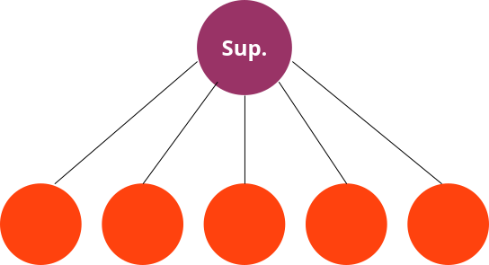
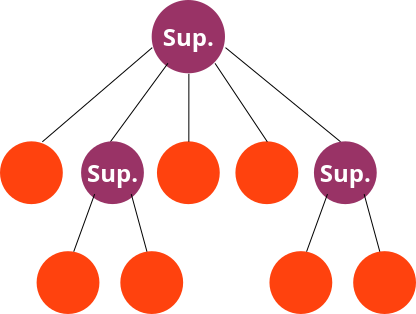
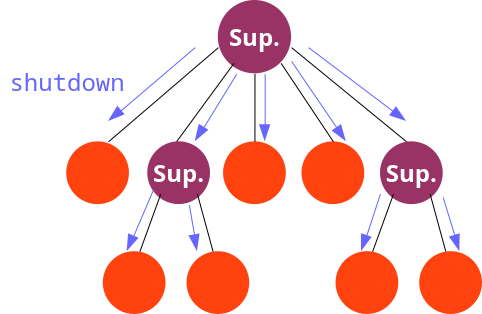
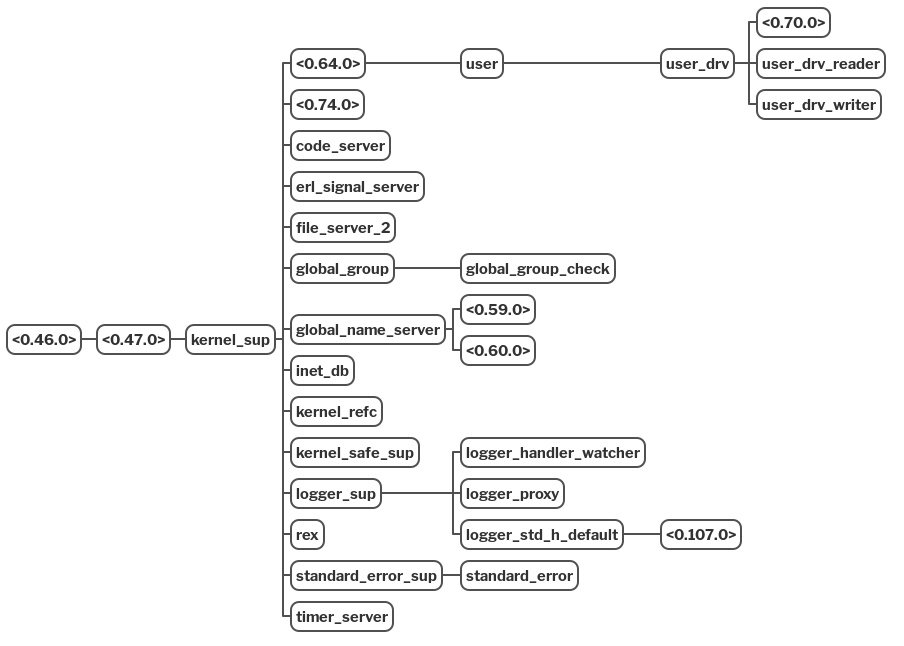
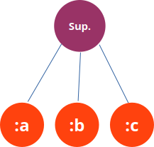

Decimos que un proceso supervisa a otro si captura sus señales de salida con el fin de reinicializarlo en caso necesario.
El supervisor crea un enlace vital con el
proceso supervisado (trabajador) y ejecuta
Process.flag(:trap_exit, true) para capturar sus señales de
salida.
Ejemplo de ejecución:
> restarter(Exploder, :exploder, [])
Iniciando proceso exploder
Ejecutando exploder_loop
Ejecutando exploder_loop
Ejecutando exploder_loop
Finalizando exploder
Iniciando proceso exploder
Ejecutando exploder_loop
Ejecutando exploder_loop
Finalizando exploder
Iniciando proceso exploder
Ejecutando exploder_loop
...{mod, fun, args} que permitirán
reiniciarlos en caso necesario.
Algunos de los procesos hijos pueden ser, a su vez, supervisores de otros trabajadores:
En ese caso, tenemos un árbol de supervisión.

La estructura de árbol de supervisión permite finalizar un sistema de una forma ordenada.
Para detener el sistema basta con enviar una señal de cierre al proceso situado en lo alto de la jerarquía. Este la transmitirá a sus hijos, y aquellos que sean supervisores lo transmitirán a su vez a los nietos, etc.

kernel)
SupervisorSupervisorLas librerías OTP incluyen una implementación de árboles de supervisión.
Esta funcionalidad está implementada como un comportamiento OTP,
llamado Supervisor.
Al igual que el comportamiento GenServer, es
necesario definir un módulo callback con funciones que son
implementadas por el programador, pero son llamadas por las librerías
OTP.
En el caso del comportamiento Supervisor, tan sólo
hay que implementar una función: init/1, que debe
especificar:
init/1Recibe un parámetro, que especificaremos cuando arranquemos el
árbol mediante Supervisor.start.
Puede devolver uno de los siguientes valores:
:ignore
El árbol de supervisión no se iniciará.
{:ok, info}
El árbol se iniciará. La componente info contiene
información sobre las opciones del supervisor y sobre la lista de
procesos supervisados.
El programador no suele construir la tupla
{:ok, info} directamente, sino que suele llamar a una
función Supervisor.init/2 que devuelve la tupla
construida.
Por tanto, la función callback init suele
tener la siguiente forma:
def init(arg) do
children = [
# ... Especificación de los hijos ...
]
Supervisor.init(children, opts) # devuelve un par {:ok, info}
enddonde opts es una keyword list.
Supervisor.init(children, opts)
El parámetro opts es una keyword list que
puede tener una o varias de las siguientes claves:
:strategy (obligatoria):max_restarts (opcional; por defecto: 3):max_seconds (opcional; por defecto: 5):auto_shutdown (opcional; por defecto:
:never)strategyDetermina cómo afecta al resto de los hijos el fallo de uno de ellos. Puede ser uno de los siguientes átomos:
:one_for_one: Si falla uno de los hijos, se
reiniciará sólo el hijo que ha fallado.
:one_for_all: Si falla uno de los hijos, se reiniciarán
todos. Utilizado cuando los procesos hijos son dependientes entre
sí.
:rest_for_one: Si falla uno de los hijos, se reiniciarán
los hijos creados a continuación de él. Se utiliza cuando se tienen
procesos encadenados, en los que cada uno depende de los anteriores.
:max_restart y :max_secondsIndican la tolerancia del supervisor a los fallos de los hijos.
Si el supervisor se ve obligado a llevar a cabo una cantidad de
reinicios superior a max_restart en menos de
max_seconds segundos, el supervisor aborta, y envía a todos sus
hijos la señal :shutdown.
:auto_shutdownAlgunos de los hijos de un supervisor pueden marcarse como significativos.
La opción :auto_shutdown indica cómo se comporta el
supervisor en caso de que se mueran uno o varios de sus procesos
significativos.
:never: el supervisor no se detiene.:any_significant: el supervisor se detiene si se muere
alguno de los procesos significativos.:all_significant: el supervisor se detiene si se mueren
todos sus procesos significativos.Supervisor.init(children, opts)
El primer parámetro de Supervisor.init es una lista
con tantos elementos como procesos supervisados.
Cada elemento de esa lista es un diccionario que contiene la información que utilizará OTP para iniciar el correspondiente proceso y controlar las acciones a realizar cuando el proceso aborta.
A cada uno de estos diccionarios se le llama child specification.
Los procesos supervisados deben implementar las pautas de diseño de las librerías OTP. Esto implica:
No se puede utilizar como trabajador un proceso cualquiera creado
mediante spawn_link.
Los trabajadores pueden ser procesos creados mediante
GenServer.start_link, Supervisor.start_link,
Task.start_link, Agent.start_link,
etc.
Es un diccionario que contiene las siguientes claves:
:id (obligatorio):start (obligatorio):restart (opcional; por defecto
:permanent):shutdown (opcional; por defecto 5 segundos o
:infinity):type (opcional; por defecto :worker):modules (opcional; por defecto se obtiene a partir de
:start):significant (opcional; por defecto
false):id)El atributo :id identifica unívocamente al hijo con
respecto a sus hermanos.
Si se inicializan varios hijos que implementan el mismo módulo,
hay que asignar un id explícitamente.
El identificador puede utilizarse posteriormente para forzar el reinicio de un determinado hijo.
:start)El atributo :start contiene la tupla
{modulo, fun, args} que indica cómo arrancar y
reinicializar el hijo.
La función definida por la tupla {modulo, fun, args}
ha de devolver un par {:ok, pid}, donde pid
será el proceso supervisado.
GenServer.start_link,
Supervisor.start_link, etc. devuelven precisamente una
tupla {:ok, pid}.:restart)Indica cómo reaccionará el supervisor cada vez que el hijo termina. Puede tomar uno de los siguientes valores:
:permanent: el hijo siempre será reiniciado.:temporary: el hijo nunca será reiniciado.:transient: sólo se reinicia si terminó por causas
anormales (es decir, la razón de terminación es distinta de
:normal o :shutdown).:shutdown)Permite establecer un tiempo máximo (en milisegundos) para que el
hijo termine después de que el servidor le envíe la señal de
:shutdown. También se permite el valor
:infinity.
Si, transcurrido ese tiempo, el hijo no termina, entonces se
forzará la parada del hijo mediante
Process.exit(pid_hijo, :kill).
:type)Puede ser uno de los siguientes átomos: :worker o
:supervisor.
Especifica el tipo de hijo (trabajador o supervisor).
Se utiliza por el sistema para gestionar las actualizaciones de código en caliente.
:module):significant)Contiene un valor booleano que indica si el hijo es significativo
(true) o no (false).
true la opción :restart
tiene que ser :temporary o :transient.Relacionado con la opción :auto_shutdown mostrada
previamente.
Vamos a construir un supervisor que supervise tres procesos contadores.
Cada contador es un GenServer que almacena un
número, el cual puede ser incrementado o decrementado.

{id, max, n}, donde:
id es el identificador del contador (un átomo).max es el valor máximo del contador.n es el valor actual del contador. # ...
@impl true
def handle_cast(:incrementar, {id, max, n}) when n < max do
IO.puts("Incrementando el contador '#{id}': #{n} => #{n + 1}")
{:noreply, {id, max, n + 1}}
end
def handle_cast(:incrementar, {id, max, n}) when n == max do
IO.puts("El contador '#{id}' rebasa el máximo.")
{:stop, :normal, {id, max, n}}
end
# ...:valor_negativo). # ...
def handle_cast(:decrementar, {id, max, n}) when n > 0 do
IO.puts("Decrementando el contador '#{id}': #{n} => #{n - 1}")
{:noreply, {id, max, n - 1}}
end
def handle_cast(:decrementar, {id, max, n}) when n == 0 do
IO.puts("El contador '#{id}' se hace negativo.")
{:stop, :valor_negativo, {id, max, n}}
end
# ...> Contador.iniciar(:a, 3)
Iniciando contador 'a'
{:ok, #PID<0.164.0>}
> Contador.incrementar(:a)
Incrementando el contador 'a': 0 => 1
> Contador.incrementar(:a)
Incrementando el contador 'a': 1 => 2
> Contador.incrementar(:a)
Incrementando el contador 'a': 2 => 3
> Contador.incrementar(:a)
El contador 'a' rebasa el máximo.
El contador 'a' termina con el motivo 'normal'iex(14)> Contador.iniciar(:d, 3)
Iniciando contador 'd'
{:ok, #PID<0.165.0>}
iex(15)> Contador.decrementar(:d)
El contador 'd' se hace negativo.
El contador 'd' termina con el motivo 'valor_negativo'
19:57:08.455 [error] GenServer :d terminating
...
Interactive Elixir (1.17.1) - press Ctrl+C to exit Shell reiniciada
> init/1:start_link/3Supervisor.start_link(modulo, arg, options \\ [])
modulo: es el nombre del módulo en
el que se encuentra la función callback init.
init es
utilizado para configurar el supervisor y para iniciar los procesos
supervisados.arg: es el argumento que se pasará
a init.
options: keyword list con
opciones adicionales. En particular, la opción name: N
permite registrar el supervisor con un nombre N.
La función start_link devuelve una
tupla {:ok, pid}, donde pid es el PID del
supervisor.
stop/2Supervisor.stop(pid, reason \\ :normal)
Finaliza el supervisor con el pid dado.
Antes de finalizar, el supervisor finalizará los procesos hijo
utilizando :shutdown como motivo de la
terminación.
> {:ok, p} = Supervisor.start_link(SupContadores, :ok)
Iniciando contador 'a'
Iniciando contador 'b'
Iniciando contador 'c'
> Contador.decrementar(:b)
El contador 'b' se hace negativo.
El contador 'b' termina con el motivo 'valor_negativo'
20:18:07.767 [error] GenServer :b terminating
...
Iniciando contador 'b' Reinicio de :b
> Supervisor.stop(p)
El contador 'c' termina con el motivo 'shutdown'
El contador 'b' termina con el motivo 'shutdown'
El contador 'a' termina con el motivo 'shutdown':b muere por causas anormales. Por tanto,
el supervisor lo reinicia.
:b
solamente se reinicie en caso de terminación anormal.> {:ok, p} = Supervisor.start_link(SupContadores, :ok)
Iniciando contador 'a'
Iniciando contador 'b'
Iniciando contador 'c'
> Contador.incrementar(:b)
Incrementando el contador 'b': 0 => 1
> Contador.incrementar(:b)
Incrementando el contador 'b': 1 => 2
> Contador.incrementar(:b)
El contador 'b' rebasa el máximo.
El contador 'b' termina con el motivo 'normal'
> Supervisor.stop(p)
El contador 'c' termina con el motivo 'shutdown'
El contador 'a' termina con el motivo 'shutdown':b no se reinicia.stop, solamente se detienen los
contadores :a y :c.:one_for_all.iex(37)> Supervisor.start_link(SupContadores, :ok, name: :sup)
Iniciando contador 'a'
Iniciando contador 'b'
Iniciando contador 'c'
iex(38)> Contador.decrementar(:a)
El contador 'a' se hace negativo.
El contador 'a' termina con el motivo 'valor_negativo'
20:35:49.358 [error] GenServer :a terminating
...
El contador 'c' termina con el motivo 'shutdown'
El contador 'b' termina con el motivo 'shutdown'
Iniciando contador 'a'
Iniciando contador 'b'
Iniciando contador 'c':a, también se han reiniciado
:b y :c.initHasta ahora hemos definido las child specifications
dentro de la función callback init/1.
Cada child specification es un diccionario.
def init(_) do
children = [
%{id: :a, start: {Contador, :iniciar, [:a, 5]}},
# ...
]
Supervisor.init(children, strategy: :one_for_all)
endContador en nuestro caso), en lugar de hacerlo en el lado
del supervisor.Dentro de la lista children pasada a
Supervisor.init es posible indicar pares de la forma
{modulo, arg}.
En este caso, la child specification correspondiente a
ese hijo se obtiene llamando a la función child_spec/1 del
modulo indicado, pasando arg como
argumento.
También es posible indicar solamente un nombre de módulo en la
lista children. En ese caso se considera que
arg es un valor cualquiera (p. ej. una lista vacía).
child_spec/1 del
trabajador no hace uso de su parámetro.En nuestro módulo Contador, añadimos una función
child_spec/1.
Esta función devuelve una child specification, que
depende del identificador (id) y del valor máximo del
contador (max) pasados como parámetro.
Modificamos la función callback init/1 del
supervisor, colocando las tuplas {modulo, arg}
correspondientes:
A veces queremos delegar en el módulo trabajador la definición
del child specification, pero queremos que el supervisor varíe
ligeramente la especificación (por ejemplo, para cambiar el atributo
:id).
La función Supervisor.child_spec/2 permite hacer
esto.
Por ejemplo:
Más información: [+]
Hasta ahora, los procesos supervisados se indicaban en una
función callback init/1 del supervisor.
Esto hace que un supervisor tenga que determinar, en tiempo de compilación, cuáles son sus procesos supervisados.
Un supervisor dinámico comienza sin hijos
supervisados. Una vez arrancado, es posible incorporar procesos
supervisados mediante start_child.
DynamicSupervisor.start_link(options)
Arranca un supervisor dinámico con las opciones indicadas
(:strategy, :max_restarts, etc.)
La única estrategia de reinicialización permitida es
:one_for_one.
DynamicSupervisor.start_child(pid, child_spec)
pid dado. La información de este proceso se encuentra en
child_spec.> {:ok, p} = DynamicSupervisor.start_link([])
{:ok, #PID<0.173.0>}
> DynamicSupervisor.start_child(p, {Contador, {:a, 3}})
Iniciando contador 'a'
> DynamicSupervisor.start_child(p, {Contador, {:b, 5}})
Iniciando contador 'b'
> Contador.decrementar(:b)
El contador 'b' se hace negativo.
El contador 'b' termina con el motivo 'valor_negativo'
...
Iniciando contador 'b' El proceso supervisado se reinicia Más información sobre DynamicSupervisor: [+]